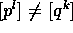
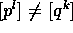

Let R be an arbitrary unital
commutative ring and A a unital R-algebra, i.e.\
a unital ring A together with a ring homomorphism from R into the center
of A sending 1 to 1.
We denote by the category of finitely generated R-modules
and by the category of right A-modules which are finitely
generated as R-modules. Assume that the isomorphism classes
of and form sets  and
and  . The
monoidal structure of the category - coming along with the
tensorproduct over R - induces the structure of a
commutative monoid on
. The
monoidal structure of the category - coming along with the
tensorproduct over R - induces the structure of a
commutative monoid on
 . Thus the multiplication of two elements
given by representatives is defined as the isomorphism
class of . The unit element 1 is the isomorphism class of
R. and in addition you have an element 0 corresponding to the zero module.
In a similar manner there is an action of the monoid
. Thus the multiplication of two elements
given by representatives is defined as the isomorphism
class of . The unit element 1 is the isomorphism class of
R. and in addition you have an element 0 corresponding to the zero module.
In a similar manner there is an action of the monoid  from
the left on the set
from
the left on the set  , since the tensor product
of an R-module U with a right A-module gives
again a right A-module.
, since the tensor product
of an R-module U with a right A-module gives
again a right A-module.
Now let be the monoid algebra on  over
the integers and the free abelian group on
over
the integers and the free abelian group on  .
The above action of
.
The above action of  on
on  induces a -module
structure on . Let
induces a -module
structure on . Let  be the abelian subgroup of
generated be the expressions U'-U+U'' for all , such that there is a short
split exact sequence (from now on we will not deitinguish between
elements in
be the abelian subgroup of
generated be the expressions U'-U+U'' for all , such that there is a short
split exact sequence (from now on we will not deitinguish between
elements in  resp.
resp.  and representatives for these
elements in resp. ).
and representatives for these
elements in resp. ).
Since tensoring split exact sequences yields again split exact
sequences,  is obviously an ideal in . We denote the
residue class ring by
is obviously an ideal in . We denote the
residue class ring by
Similarily, in we consider the abelian subgroup generated by all expressions M'-M+M'', such that there is a short exact sequence
of right A-modules which is split as a sequence of R-modules. It is obviously an -submodule of and clearly one has
Therefore the quotient
can be considered as an -module. Before proceeding let us
give some examples. For this purpose denote by  the set of isomorphism classes corresponding to the
indecomposable R-modules and by the
set corresponding to cyclic R-modules, i.e. modules
isomorphic to R/I for some ideal I in R. Note that
the set of isomorphism classes corresponding to the
indecomposable R-modules and by the
set corresponding to cyclic R-modules, i.e. modules
isomorphic to R/I for some ideal I in R. Note that  is a submonoid of
is a submonoid of  and both contain 1 and 0.
Therefore, the -linear span of
and both contain 1 and 0.
Therefore, the -linear span of  in is a
subring.
in is a
subring.
Now if R is noetherian, then the ring is generated by the
residue classes of . If in addition the Krull-Schmidt
theorem holds in , that is, if decomposition into
indecomposables is unique, then is free abelian on
.
Let us look in more detail to the case where R
is a principal ideal domain. Here you have
and the former is a submonoid as well. More precisely, for each pair
(p,l) of a prime  and a positive integer
and a positive integer  you have
an element in whose representative is and which
we denote by . From the main theorem on modules over principal
ideal domains it follows that for different pairs
you get different elements  and that all elements
of - except 1 and 0 - are of this form. The multiplication
in for elements other than 1 and 0
is given by the rule
you have
an element in whose representative is and which
we denote by . From the main theorem on modules over principal
ideal domains it follows that for different pairs
you get different elements  and that all elements
of - except 1 and 0 - are of this form. The multiplication
in for elements other than 1 and 0
is given by the rule
Now is canonically isomorphic to
the integral monoid algebra of factored by the one
dimensional span of the element . In the case
R is a principal ideal domain we will always identify in
this way and use the notation for basis elements as above.
In the same manner we write
[n] for the residue class of the isomorphism type of R/(n) if
is arbitrary. Thus if is the
primedecomposition of n in R.
In the case where R is a field, is canonically isomorphic
to and  is the
Grothendieck group
is the
Grothendieck group  of A considered as a -module.
of A considered as a -module.
We call a right A-module reducible by R-sums
iff M contains an A-submodule N which is a direct summand
of R-modules in M. If M is not reducible by R sums we call it
irreducible by R sums. The concept is clearly invariant under
isomorphisms of A-modules.
Let be the subset of  consisting of
isomorphism classes of by R sums
irreducible A-modules. If R is noetherian it is easily seen
that
consisting of
isomorphism classes of by R sums
irreducible A-modules. If R is noetherian it is easily seen
that  is generated by as a -module.
is generated by as a -module.